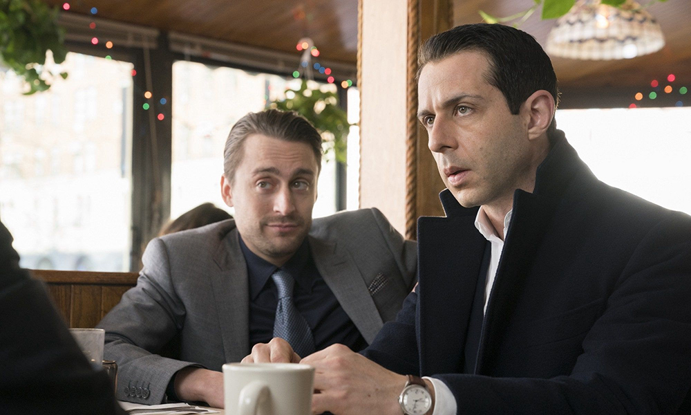

Succession es una serie de televisión de drama estadounidense sobre una familia disfuncional, dueña de un imperio de medios audiovisuales y de empresas de entretenimiento. Se estrenó el 3 de junio de 2018 en HBO. Fue creada por Jesse Armstrong, con Will Ferrell y Adam McKay como productores ejecutivos. McKay también dirigió el episodio piloto. El 11 de junio de 2018, se anunció que HBO había renovado la serie para una segunda temporada, que se estrenó el 11 de agosto de 2019. En agosto de 2019 fue renovada para una tercera temporada que se estrenó el 17 de octubre de 2021. En octubre de 2021, la serie fue renovada para una cuarta temporada.
